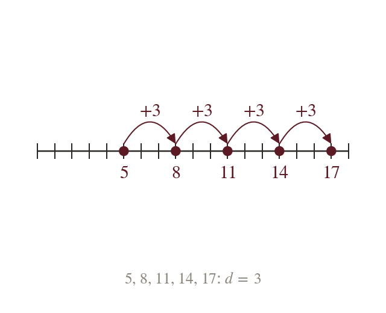
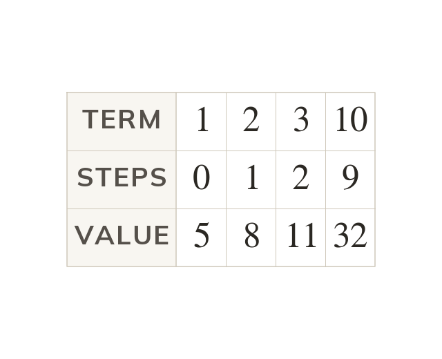
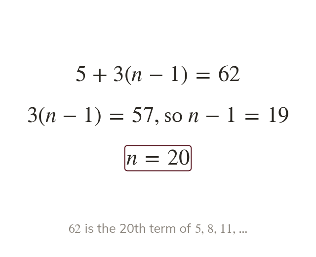
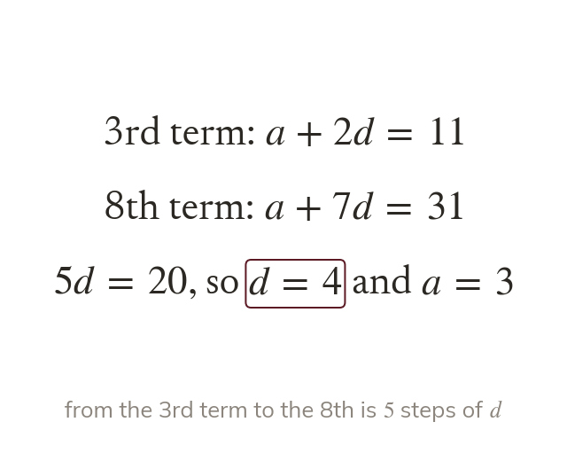
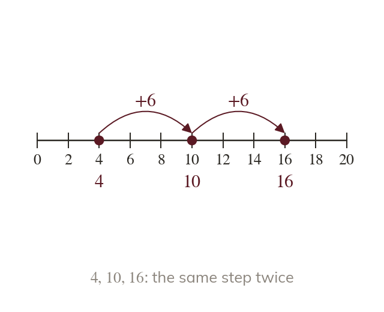
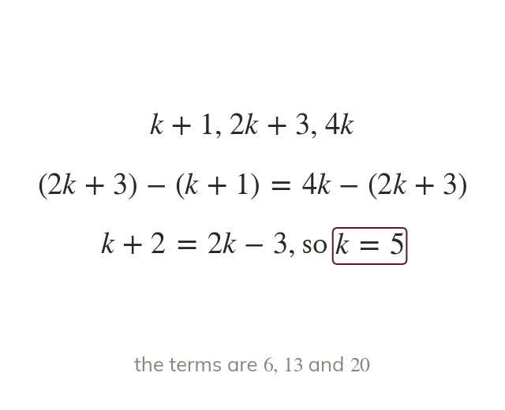

The same step every time
In an arithmetic sequence each term is the one before plus the common difference A decreasing sequence has a negative
An arithmetic sequence grows by the same step each time, so one formula gives any term without listing the ones before. The nth term - 1)d is the start of every series in this chapter, from the sums in to the salary models in
Work down the page at your own pace. Write every answer in your book first, then click to check it.
Read each card, then follow the worked examples one step at a time.

In an arithmetic sequence each term is the one before plus the common difference A decreasing sequence has a negative

The nth term is steps of d after the first term, so it is - 1)d. The 10th term is steps on, not

To find which term a value is, set - 1)d equal to it and solve for Only a positive whole number means the value is a term.
Pick an answer. If it's wrong, the feedback tells you which mistake it was.
Write the blanks in your book first, then tap each one to check.
Read each card, then follow the worked examples one step at a time.

Each given term is an equation in a and Subtracting the two equations removes a and leaves

Three consecutive terms are arithmetic when The middle term is then the mean of the other two.

When the terms are written in set the two differences equal and solve for Then write out the terms to check.
Pick an answer. If it's wrong, the feedback tells you which mistake it was.
Write the blanks in your book first, then tap each one to check.
Finished? Next lesson: P2-3.2 Arithmetic Series.
For each skill, tap the one that is true for you today. Your Revise pages start with anything you mark Not yet.
Your ratings are saved on this device only.
Log in, then search for a code to practise that skill.